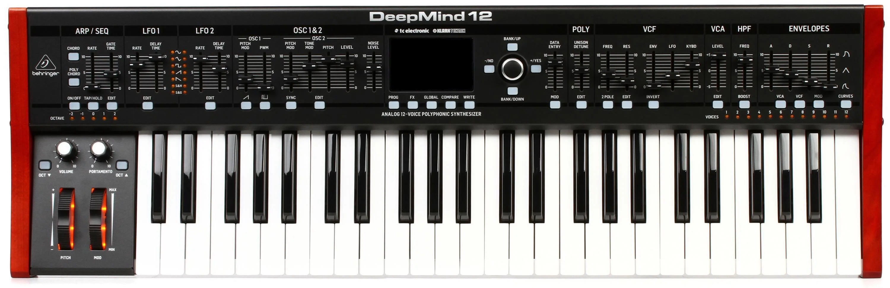
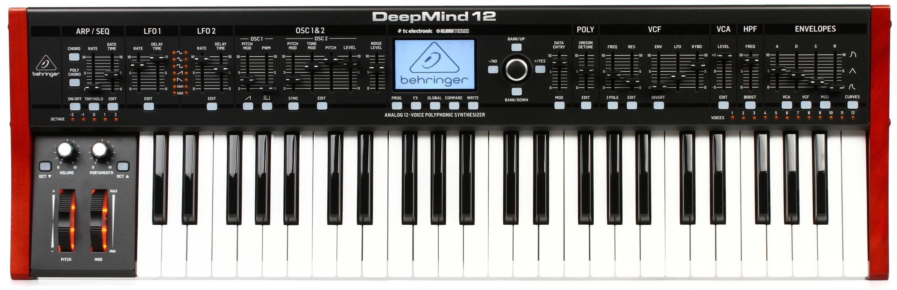

Synthesizer
Deepmind 12


Functies
- 2 Low Frequency Oscillators (LFO)
- Arpeggiator
- Oscillator 1
- pitch mod
- Pulse Width Modulatior
- Oscillator 2
- Pitch mod
- Tone mod
- Pitch
- Level
- Noise machine
- Polyphony control
- Voltage controlled filter
- Frequency control
- Resonance control
- Envelope amount
- LFO amount
- Keyboard amount
- Amplifier control
- High pass filter
- Envelopes
- Attack
- Decay
- Sustain
- Release
- Octave control
- Volume control
- Portamento
- Pitch wheel
- Mod wheel
- Effects
Some of the filters above will be talked about in the subtractive_synthesis page
The deepmind is a subtractive synthesizer. It was produced by Behringer and released in 2016. It is a synthesizer based on the Roland Juno series. Although it has many features that differentiate it. The synthesizer produces a audio signal as output. This means if I have to run the signal through an audio-interface. This converts the signal in a way that the computer can read it and record it. This also is one of the big differences between my MIDI keyboard and the synth.